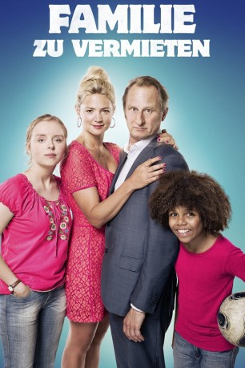

gesehen am 06.03.2018
gesehen am 06.03.2018Alternativ: Family For Rent (Englischer Titel) gesehen am 06.03.2018
 
 IMDB-Wertung: 5.5 / 10
IMDB-Wertung: 5.5 / 10  Metascore:
Metascore: 
Geschäftsmann Paul-André ist Mitte 40, Single und genauso reich wie einsam. Doch letzteres will er nun endlich ändern. Als er zufällig mitbekommt, dass die lebensfrohe Violette aufgrund akuter finanzieller Probleme drauf und dran ist, das Sorgerecht für ihre beiden Kinder zu verlieren, hat Paul-André schließlich die zündende Idee, um auch mal in den Genuss von Familienglück zu kommen. So lässt er die alleinerziehende Mutter aufsuchen und unterbreitet ihr den ungewöhnlichen Vorschlag, all ihre Schulden zu bezahlen, wenn sie ihn dafür probehalber für einige Monate in ihre Familie aufnimmt. Nach anfänglicher Skepsis willigt Violette letztendlich ein. Doch als Paul-André dann statt mit sofortiger familiärer Harmonie zunächst mit jeder Menge Chaos und Unordnung konfrontiert wird, muss er feststellen, dass ein Familienleben vielleicht doch nicht so einfach ist, wie er sich das ausgemalt hat.
Jahr: 2015
Dauer: 96 Minuten
FSK: 6
Land: Frankreich Studio: StudioCanalTonspuren:
Untertitel: Deutsch,
Auflösung: 1080p (1920x1040) Größe: 5539 MB
Regisseur: Jean-Pierre Améris
Drehbuch: Jean-Pierre Améris
Soundtrack:
Darsteller:
 Benoît Poelvoorde als Paul-André Delalande
Benoît Poelvoorde als Paul-André Delalande Virginie Efira als Violette Mandini
Virginie Efira als Violette Mandini François Morel als Léon
François Morel als Léon Edith Scob als Madame Delalande
Edith Scob als Madame DelalandeDatei: X:\2015(A-F)\Familie zu vermieten (2015, FSK6, 1920x1040).mkv seit 08.01.2018
Festplatte: HD 2015(A-Z)
 Es gibt insgesamt 143 Filme in der Gruppe '2015(A-F)'
Es gibt insgesamt 143 Filme in der Gruppe '2015(A-F)'